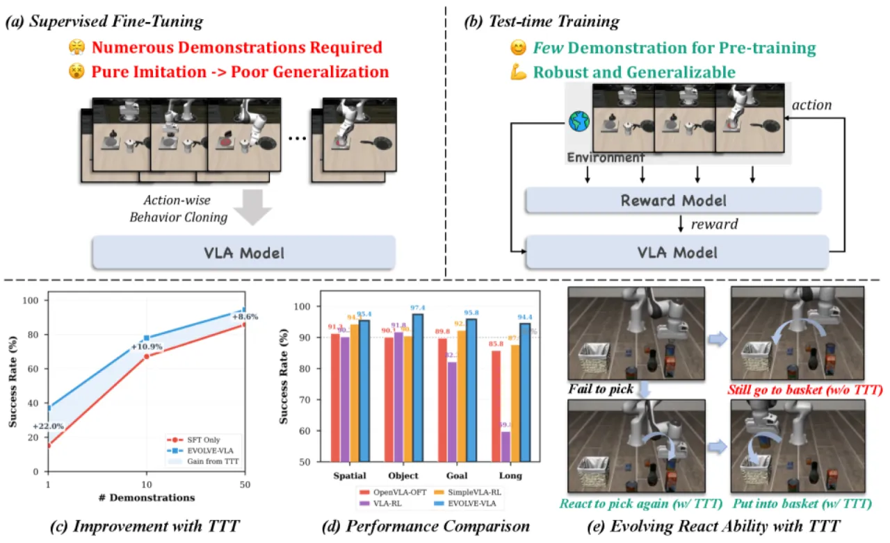
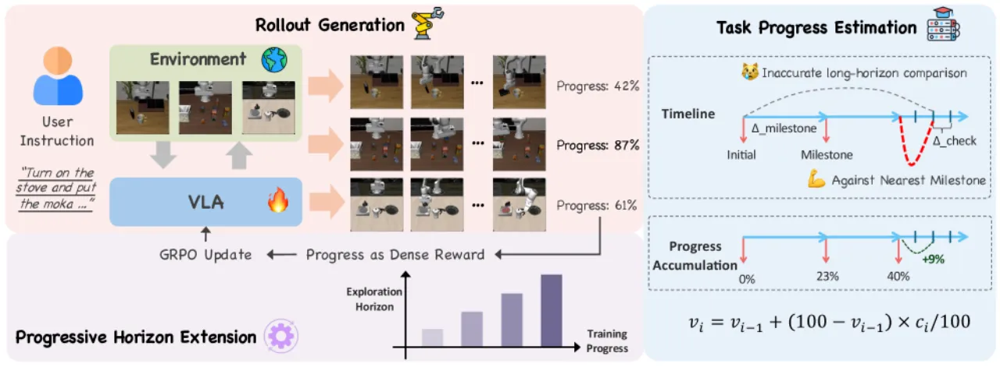
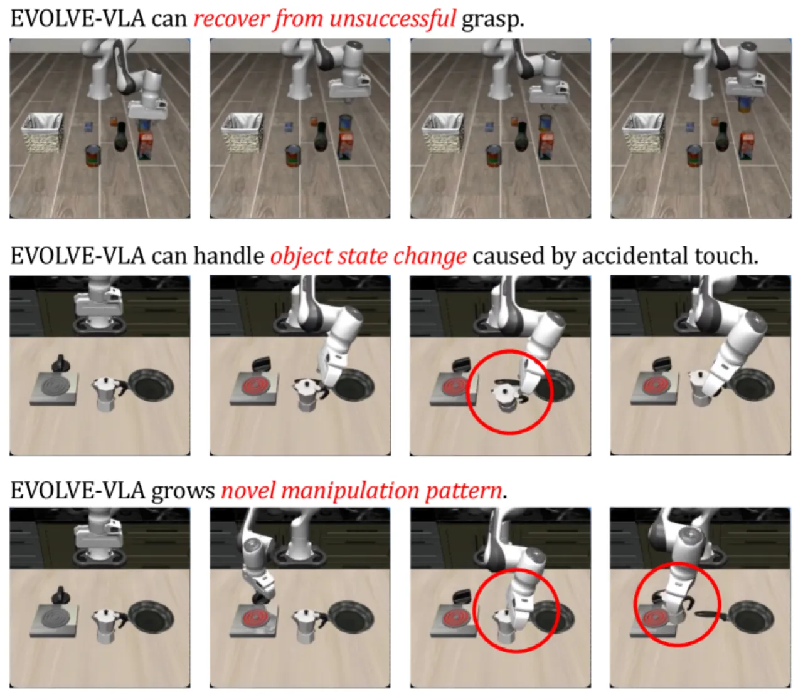

EVOLVE-VLA 提出了一种基于环境反馈的 test-time training 框架，使 VLA 模型能够通过与环境的在线交互持续改进，而无需额外的人工示范。该框架结合学习式进度估计器（VLAC）、Accumulative Progress Estimation 和 Progressive Horizon Extension，在 LIBERO 基准上实现了显著的性能提升，并首次展示了无任务演示情况下的跨任务泛化能力。
当前的 VLA 模型依赖大规模的监督微调（SFT），这在实际部署中存在两大根本缺陷：高昂的数据采集成本以及脆弱的分布内记忆。模型在面对部署环境与训练分布的差异时几乎无法自适应恢复。
"How do humans develop manipulation skills? We do not simply watch an expert perform a task once and then flawlessly replicate it. Instead, we learn through practice: attempting the task repeatedly, making mistakes, receiving feedback from the environment, and gradually refining our movements through continued experience."
作者指出，现有 VLA 的两大核心瓶颈为：

EVOLVE-VLA 的核心思路是：在测试时让 VLA 与真实或模拟环境交互，用环境反馈信号（而非人工标注）驱动在线强化学习，从而在无需额外示范的情况下持续提升策略。框架由三个相互协作的组件构成。

由于现实环境中难以获取稀疏成功信号，EVOLVE-VLA 引入了基础模型级别的 critic 模型 VLAC。它接收两张图像和任务指令作为输入，输出一个连续的 critic 值——正值表示第二张图相对于第一张在任务完成上有所进展。这一设计将稀疏的结果信号转化为稠密的逐步反馈，有效解决了 sparse reward 的学习困难问题。
直接使用 VLAC 比较相邻帧会引入大量噪声。论文提出了基于"区间里程碑采样"（interval-based milestone sampling）的累积进度估计策略：将当前状态与最近的里程碑状态对比，而非初始状态，并通过比例调整（proportional adjustments）平滑噪声。消融实验表明，在相同的 reward call 数量（32 次）下，该方法的 F-Score 从 0.04 提升至 0.20，成功率从 88.3% 提升至 91.3%。
长时域任务探索困难，策略难以直接从完整轨迹中学习。EVOLVE-VLA 采用渐进式扩展探索视野的训练策略：先让策略掌握较短子目标，再逐步延长任务长度直至完整任务。这一机制带来了额外的 +3.1% 成功率提升（91.3% → 94.4%），如 Table 4 所示。
策略更新采用 Group Relative Policy Optimization（GRPO）。GRPO 在每批轨迹内归一化奖励计算优势，应用 PPO 风格的 clipping 保证稳定更新，且无需独立的 value network，显著降低了计算开销。采样时以 temperature T > 1 采样以增强轨迹多样性。
实验在 LIBERO 基准上进行，该基准包含 4 个任务套件（Spatial / Object / Goal / Long），每套 10 个任务，共 4 种测试场景。基础模型为 OpenVLA-OFT（autoregressive VLA）。
| 模型 | Spatial | Object | Goal | Long | Avg |
|---|---|---|---|---|---|
| OpenVLA-OFT (SFT 基线) | 90.1 | 89.8 | 89.8 | 85.8 | 89.2 |
| EVOLVE-VLA（本文） | 97.4 | 95.8 | 95.8 | 94.4 | 95.8 |
| 提升 | +7.3 | +6.0 | +6.0 | +8.6 | +6.5 |
| 模型 | Spatial | Object | Goal | Long | Avg |
|---|---|---|---|---|---|
| OpenVLA-OFT（1 条示范） | 65.1 | 40.1 | 57.2 | 15.1 | 43.6 |
| EVOLVE-VLA（本文） | 73.4 | 70.0 | 64.7 | 37.1 | 61.3 |
| 提升 | +8.3 | +29.9 | +7.5 | +22.0 | +17.7 |
将在 LIBERO-Long 上训练的策略直接部署到 LIBERO-Object：SFT 基线成功率为 0%，而 EVOLVE-VLA 通过纯自主探索，无任务示范地达到 20.8% 成功率——证明了 test-time training 赋予 VLA 超出训练分布的泛化能力。

Table 3 验证了 Accumulative Progress Estimation 的有效性：在相同 reward call 数（32 次）下，相比直接比较相邻两帧的基线（F-Score 0.04，SR 88.3%），区间采样策略将 F-Score 提升至 0.20，成功率提升至 91.3%，同时避免了均匀采样（Uniform）随 call 数增加导致 SR 下降的问题。
Table 4 展示了逐步叠加各模块的效果：SFT 85.8% → + Binary Outcome Rewards 87.7% → + Dense Reward (Vanilla Critic) 91.3% → + Progressive Horizon Extension 94.4%，每个模块均贡献了显著提升。
进度估计器 VLAC 可能将语义上看似接近完成的状态评分为高分，但环境的规则化成功判据（coordinate rules）仍将其标记为失败。策略因此学会"欺骗"进度估计器而非真正完成任务，导致环境成功率虚低而 critic 评分虚高。
与上述问题对立的一面：部分情况下环境根据坐标规则判定任务成功，但语义上任务并未完整完成（如物体位置满足坐标阈值但方向错误）。这一"inherent difficulty in aligning rule-based simulation criteria with semantic task understanding"是当前框架的固有缺陷，需要更精细的 reward 设计来解决。
所有实验均在 LIBERO 仿真环境中进行。真实机器人部署面临额外挑战：视觉域差距、物理接触噪声、更稀疏且难以自动获取的成功信号。论文未报告真实世界实验，现实可行性有待验证（inferred from design）。
整个框架的 reward 质量高度依赖 VLAC 基础模型对操作进度的理解能力。若 VLAC 对特定任务类型（如精细抓取、工具使用）的理解存在偏差，上游 reward 噪声将放大策略训练的误差（inferred from design）。